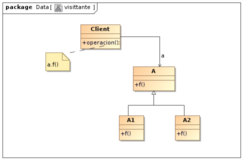
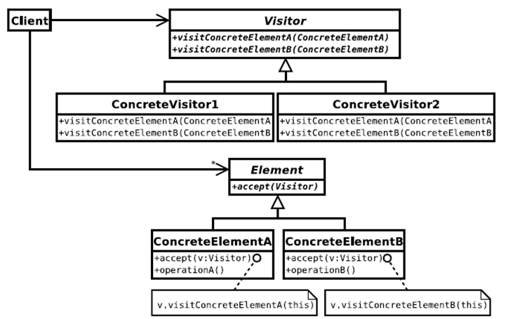
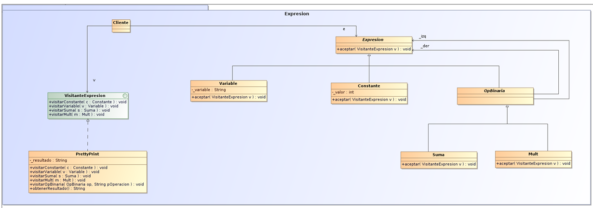

Visitor
El patrón visitor pretende separar las operaciones de la estructura del objeto, para ello, se definen unas clases elemento con un método “aceptar” que recibirá al “visitante”, teniendo un visitador por clase. De este modo, utilizamos las clases elemento para definir la estructura del objeto, y los visitantes para establecer los algoritmos y operaciones del objeto visitado.
Una de las particularidades más remarcables de este patrón reside en el método aceptar de un elemento, donde se define una llamada al método visitar del visitante y el argumento visitante al llamar al método aceptar en los métodos hijos de nuestra estructura de elementos.
Supongamos que tenemos una jerarquía de expresiones aritméticas sobre las que queremos definir visitantes, entre los que queremos que se encuentre un visitante que convierta la expresión aritmética en una cadena de caracteres.
Propósito
Es un patrón de comportamiento, que permite definir una operación sobre objetos de una jerarquía de clases sin modificar las clases sobre las que opera. Representa una operación que se realiza sobre los elementos que conforman la estructura de un objeto. A continuación se detalla un caso en el que sería de gran utilidad aplicar dicho patrón
Uno de los principales problemas que presenta este diseño, es querer que la operación f() no esté en la jerarquía, sino que esté fuera, para que cada vez que haya un cambio no haya que cambiarlo todo. Esta opción, además, obliga a tener que definir cada operación que necesite el cliente en cada clase de la jerarquía, y a que los clientes conozcan operaciones que no necesita, ya que solo interesa que conozca las que va a manejar. El patrón Visitante, cambia el modelo orientado a objetos y crea una clase externa para actuar en los datos en otras clases. Esto es útil si hay un buen número de instancias de un pequeño número de clases y se desea realizar alguna operación que involucra a todas o a la mayoría de ellas
Estructura
Donde:
- Visitante (Visitor): Declara una operación de visita para cada elemento concreto en la estructura de objetos, que incluye el propio objeto visitado
- Visitante Concreto (ConcreteVisitor1/2): Implementa las operaciones del visitante y acumula resultados como estado local
- Elemento (Element): Define una operación “Accept” que toma un visitante como argumento
- Elemento Concreto (ConcreteElementA/B): Implementa la operación “Accept”
Aplicabilidad
El patrón visitante es aplicable, por ejemplo, cuando varias clases de objetos con interfaces diferentes y se desean realizar operaciones que dependen de sus clases concretas. También cuando se necesitan diversas operaciones sobre objetos de una jerarquía y no se desea recargar las clases con estas operaciones.
Es de mucha utilidad cuando las clases de la jerarquía no cambian, pero se añaden con frecuencia operaciones a la estructura.
Si la jerarquía cambia no es aplicable, ya que cada vez que agrega nuevas clases que deben ser visitadas, hay que añadir una operación “visita” abstracta a la clase abstracta del visitante, y debe agregar una aplicación de dicha categoría a cada Visitante concreto que se haya escrito.
Ejemplo
En el ejemplo de a continuación, habrá una jerarquía de expresiones aritméticas simples sobre las que se desea definir visitantes. Uno de los visitantes será la operación PrettyPrint que convierte a cadena de caracteres la expresión aritmética. Mediante la siguiente estructura se comprenderá mejor el ejemplo:

/*
* Esta es la superclase de una jerarquía que permite representar expresiones
* aritméticas simples y sobre la que deseamos definir visitantes.
*/
package expresion;
public abstract class Expresion {
abstract public void aceptar(VisitanteExpresion v);
}
package expresion;
public class Constante extends Expresion {
public Constante(int valor) { _valor = valor; }
public void aceptar(VisitanteExpresion v) { v.visitarConstante(this); }
int _valor;
}
package expresion;
public class Variable extends Expresion {
public Variable(String variable) { _variable = variable; }
public void aceptar(VisitanteExpresion v) { v.visitarVariable(this); }
String _variable;
}
package expresion;
public abstract class OpBinaria extends Expresion {
public OpBinaria(Expresion izq, Expresion der) { _izq = izq; _der = der; }
Expresion _izq, _der;
}
package expresion;
public class Suma extends OpBinaria {
public Suma(Expresion izq, Expresion der) { super(izq, der); }
public void aceptar(VisitanteExpresion v) { v.visitarSuma(this); }
}
package expresion;
public class Mult extends OpBinaria {
public Mult(Expresion izq, Expresion der) { super(izq, der); }
public void aceptar(VisitanteExpresion v) { v.visitarMult(this); }
}
/*
* Esta es la clase abstracta que define la interfaz de los visitantes
* de la jerarquía Expresion -- en realidad, utilizamos una interfaz Java
* dado que todos los métodos son abstractos.
*/
package expresion;
public interface VisitanteExpresion {
public void visitarSuma(Suma s);
public void visitarMult(Mult m);
public void visitarVariable(Variable v);
public void visitarConstante(Constante c);
}
/**
* Uno de los posibles visitantes de las Expresiones es un pretty printer
* que convierte a cadena de caracteres la expresión aritmética. El algoritmo
* usado no optimiza el uso de paréntesis... El resultado se acumula en
* el atributo privado _resultado, pudiéndose acceder a éste desde el exterior
* mediante el método obtenerResultado()
*/
package expresion;
public class PrettyPrinterExpresion implements VisitanteExpresion {
// visitar la variable en este caso es guardar en el resultado la variable
// asociada al objeto... Observe que accedemos al estado interno del objeto
// confiando en la visibilidad de paquete...
public void visitarVariable(Variable v) {
_resultado = v._variable;
}
public void visitarConstante(Constante c) {
_resultado = String.valueOf(c._valor);
}
// Dado que el pretty-printer de una operación binaria es casi idéntica,
// puedo factorizar parte del código con este método privado...
private void visitarOpBinaria(OpBinaria op, String pOperacion) {
op._izq.aceptar(this);
String pIzq = obtenerResultado();
op._der.aceptar(this);
String pDer = obtenerResultado();
_resultado = "(" + pIzq + pOperacion + pDer + ")";
}
// Por último la visita de la suma y la mult se resuelve mediante el método
// privado que se acaba de mencionar...
public void visitarSuma(Suma s) {
visitarOpBinaria(s, "+");
}
public void visitarMult(Mult m) {
visitarOpBinaria(m, "*");
}
// El resultado se almacena en un String privado. Se proporciona un método
// de acceso público para que los clientes del visitante puedan acceder
// al resultado de la visita
public String obtenerResultado() {
return _resultado;
}
private String _resultado;
}
import expresion.*;
class Main {
static public void main(String argv[]) {
// Construcción de una expresión (a+5)*(b+1)
Expresion expresion = new Mult( new Suma( new Variable("a"),
new Constante(5) ),
new Suma( new Variable("b"),
new Constante(1) ));
// Pretty-printing...
PrettyPrinterExpresion pretty = new PrettyPrinterExpresion();
expresion.aceptar(pretty);
// Visualizacion de resultados
System.out.println("Resultado: " + pretty.obtenerResultado());
}
}